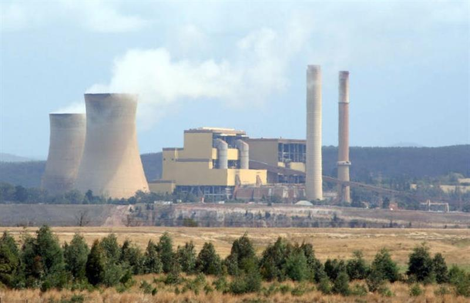

Lucas Jackson/Reuters
May 19, 2020 9.03pm BST
Authors
Chief research scientist, CSIRO Oceans and Atmosphere; and Executive Director, Global Carbon Project, CSIRO
Royal Society Research Professor, University of East Anglia
Chair Sustainability Economics of Human Settlements, Mercator Institute on Global Commons and Climate Change
Research Director, Center for International Climate and Environment Research - Oslo
Senior Research Associate, University of East Anglia
Chair, Mathematical Modelling of Climate, University of Exeter
Chair, Department of Earth System Science, and Chair of the Global Carbon Project, globalcarbonproject.org, Stanford University
Research Fellow, University of Groningen
The numbers of people cycling and walking in public spaces during COVID-19 has skyrocketed. Cities from Bogota to Berlin and Vancouver have expanded bike lanes and public paths to accommodate the extra cycling traffic. In Australia, the New South Wales government is encouraging councils to follow suit.
Mandatory social distancing under COVID-19 is disrupting the way we live and work, creating new lifestyle patterns. But once the crisis is over, will – and should – the picture return to normal?
That’s one of many key questions emerging as the precise effect of the pandemic on carbon emissions becomes clear.
Read more: Australia listened to the science on coronavirus. Imagine if we did the same for coal mining
Our research published today in Nature Climate Change shows how COVID-19 has affected global emissions in six economic sectors. We discovered a significant decline in daily global emissions – most markedly, on April 7.
The analysis is useful as we consider the deep structural change needed to shift the global economy to zero emissions.
Take, for example, our quieter streets. The fall in road traffic was a main driver of the global emissions decline. So, if we encourage cycling and working from home to continue beyond the current pandemic, our climate goals will become far more achievable.
{kind=link}
Global daily fossil emissions of carbon dioxide in million tonnes. Dash lines represent different future scenarios in the evolution of the pandemic and confinement levels.
Crunching the numbers
At the end of each year we publish the Global Carbon Budget – a report card on global and regional carbon trends. But the unusual circumstances this year prompted us to run a preliminary analysis.
We calculated how the pandemic influenced daily carbon dioxide emissions in 69 countries covering 97% of global emissions and six economic sectors.
It required collecting new, highly detailed data in different ways, and from diverse sources.
For example, we examined surface and air transport activity using data from TomTom and Apple iPhone direction requests, highway traffic records and airport departures. We used daily data to estimate changes in electricity usage.
And we built an index showing the level and size of the population under confinement in each country, to extrapolate the available data worldwide.
The pandemic’s peak
In early April, the reduction in global activity peaked. On April 7, global emissions were 17% lower than an equivalent day in 2019.
Total daily emissions in early April were similar to those observed in 2006. The fact that the world now emits as much under “lockdown” conditions as it did under normal conditions just 14 years ago underscores the rapid emissions growth in that time.
Road traffic contributed the most to the emissions decline (43%). The next biggest contributors were the power sector (electricity and heat) and industry (manufacturing and material production such as cement and steel). These three sectors combined were responsible for 86% of the fall in daily emissions.
{kind=link}
The peak daily fall in global aviation activity (60%) was the largest of any sector we analysed. But aviation’s contribution to the overall fall in emissions was relatively small (10%) because it makes up just 3% of global emissions.
As people stayed at home, we found a small increase in global emissions from the residential sector.
In Australia, our widespread, high-level confinement triggered an estimated fall in peak daily emissions of 28% – two-thirds larger than the global estimate of 17%.
{kind=link}
The 2020 outlook
We assessed how the pandemic will affect carbon dioxide emissions over the rest of 2020. Obviously, this will depend on how strong the restrictions are in coming months, and how long they last.
If widespread global confinement ends in mid June, we estimate overall carbon emissions in 2020 will fall about 4% compared to 2019. If less severe restrictions remain in place for the rest of the year, the reduction would be about 7%.
If we consider the various pandemic scenarios and uncertainties in the data, the full range of emissions decline is 2% to 13%.
Now for the important context. Under the Paris climate agreement and according to the United Nations Gap report, global emissions must fall by between 3% and 7% each year between now and 2030 to limit climate change well below 2℃ and 1.5℃, respectively.
Under our projected emissions drop, the world could meet this target in 2020 – albeit for the wrong reasons.
Stabilising the global climate system will require extraordinary changes to our energy and economic systems, comparable to the disruption brought by COVID-19.

Victoria’s Yallourn coal station. COVID-19 offers a chance to restructure energy systems.
A fork in the road
So how could we make this byproduct of the crisis – the emissions decline in 2020 – a turning point?
A slow economic recovery might lower emissions for a few years. But if previous global economic crises are any indication, emissions will bounce back from previous lows.
But it need not be this way. The recent forced disruption offers an opportunity to change the structures underpinning our energy and economic systems. This could set us on the path to decarbonising the global economy.
Let’s consider again the extra people now walking and riding bikes. What if governments took the chance now to support such active, low-emissions travel, and make it permanent? What if we accelerate the rollout of electric cars, bikes and scooters, to both broaden transport options and save lives through cleaner city air?
Encouragingly, the NSW government recently announced a A$15 million fund to help councils create bigger public thoroughfares and extra road crossings during the crisis. If the community embraces the changes, they may become permanent.
And Paris will invest €300 million (A$500 million) into a 650km bicycle network post-lockdown, including new “pop up” cycleways established during the pandemic.
The crisis has opened the way for other structural change. People and businesses have been able to test what travel is essential, and when alternative remote communication might be equally or more efficient.
Finally, energy and material consumption dropped during COVID-19. While such forced reductions are not a long-term answer to reducing greenhouse gas emissions, lower consumption can be achieved in other ways, such as new types of energy efficiency, that allow both environmentally sustainable development and rising well-being, incomes and activity.
We can rapidly return to the old “normal”, and the emissions pathway will follow suit. But if we choose otherwise, 2020 could be the unsolicited jolt that turns the global emissions trend around.
SOURCE: THE CONVERSATION